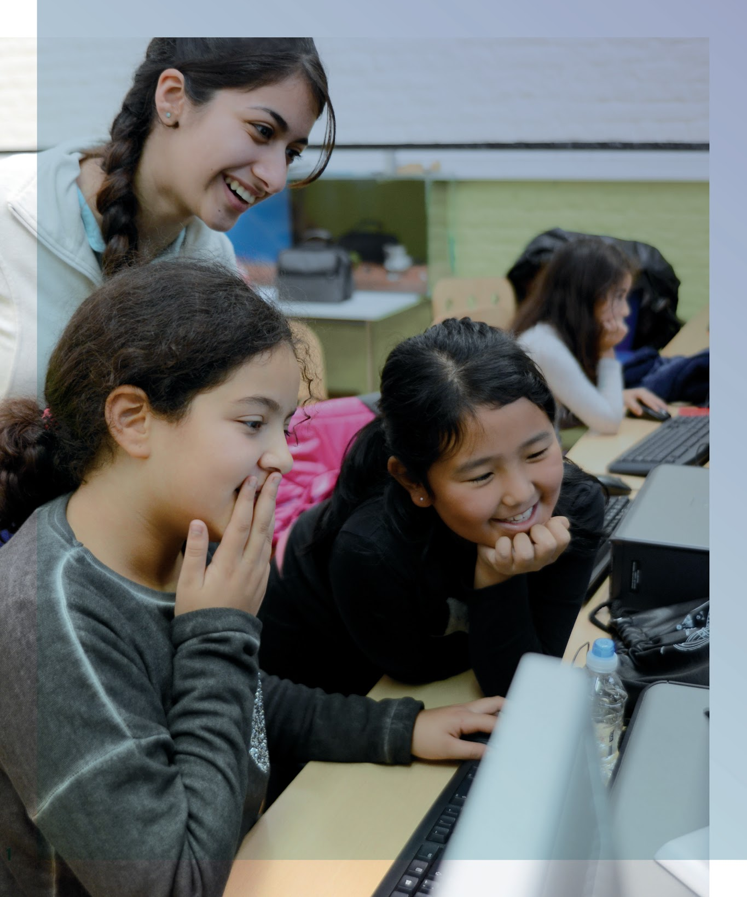

Pourquoi avoir créé la Fondation 4WINGS ?

En Belgique, les réalités économiques et sociales se complexifient sans cesse. De plus en plus d’hommes, de femmes et d’enfants se retrouvent en situation précaire. Les défis sont de plus en plus nombreux pour les populations fragiles.
La 4WINGS Foundation a une forte volonté d’agir pour renforcer les liens sociaux et encourager une société plus résiliente.
Qui sommes-nous ?
La Fondation a été créée à l’initiative de 29 membres d’une même famille. La moyenne d’âge est plutôt jeune (37 ans) et les membres partagent une volonté forte d’entreprendre, de créer et de partager.
Les membres de notre famille ont décidé d’agir ensemble. Nous voulons soutenir les efforts des entrepreneurs sociaux dans leur pratique pour amplifier leur impact sociétal. Pour accomplir cette mission, nous sommes accompagnés par Virginie et son équipe de professionnels expérimentés. C’est cette équipe qui pilote la Fondation au quotidien.
Nos cibles
La Fondation sélectionne les projets sur base d’un processus formel, clair et transparent. Elle s’appuie sur l’expertise de son équipe, de ses membres, et collabore avec des experts extérieurs. Leur connaissance approfondie des réseaux d’acteurs du secteur de la précarité et de l’entreprenariat social en Belgique lui permet de focaliser son action pour avoir plus d’impact.
Nous cherchons par ailleurs à créer des synergies entre les projets soutenus.
Notre secteur
Quels sont vos secteurs d’actions ? 4WINGS a choisi de soutenir prioritairement des initiatives innovantes dans le logement, la tech-education et la santé par la nutrition, trois domaines clés dans la lutte contre la précarité en Belgique.